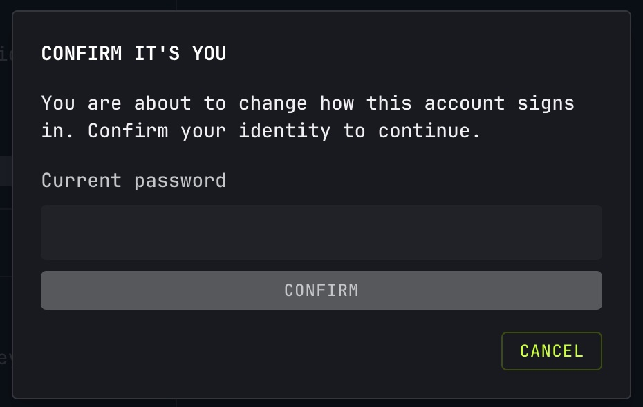
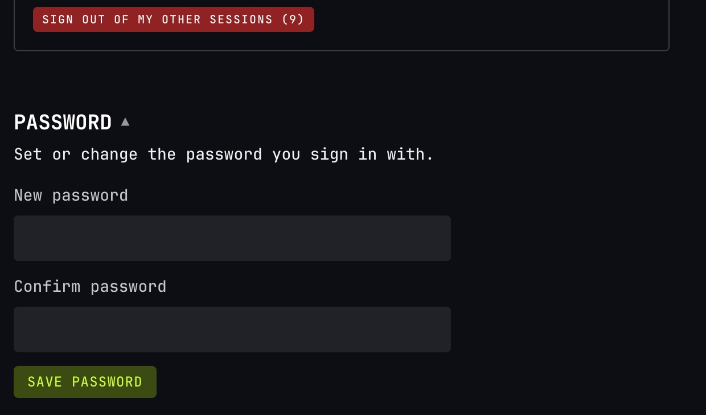
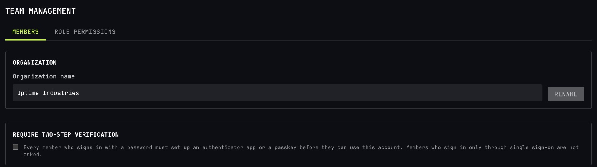
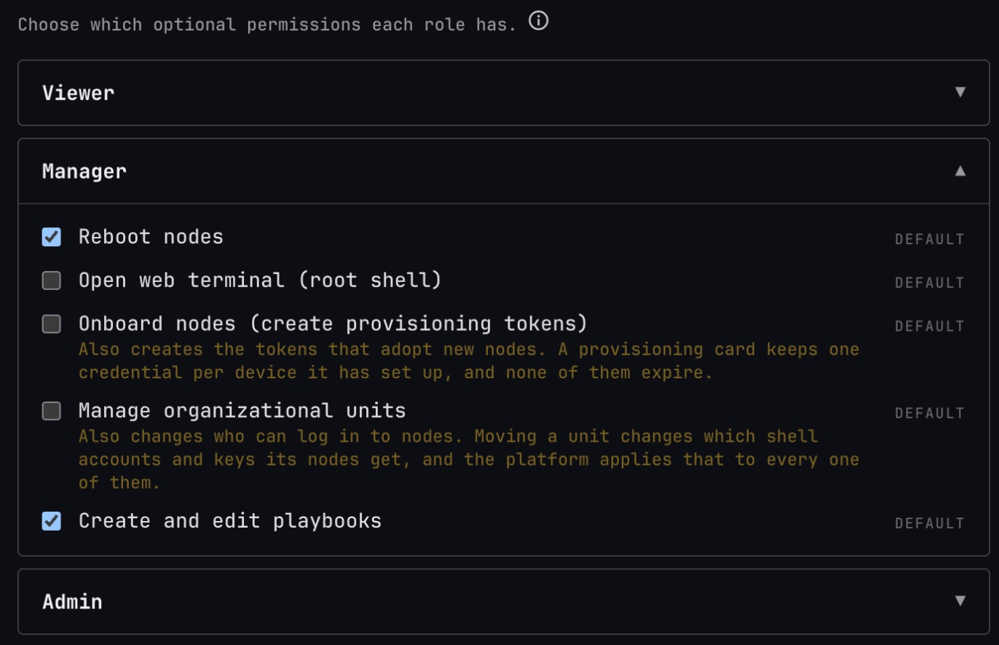
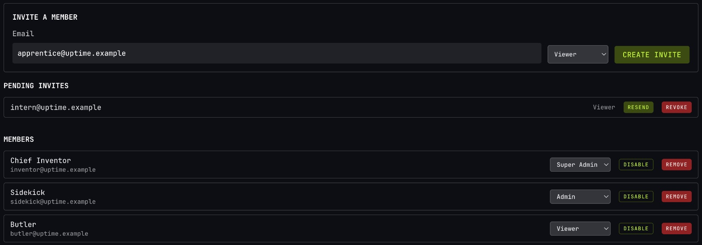
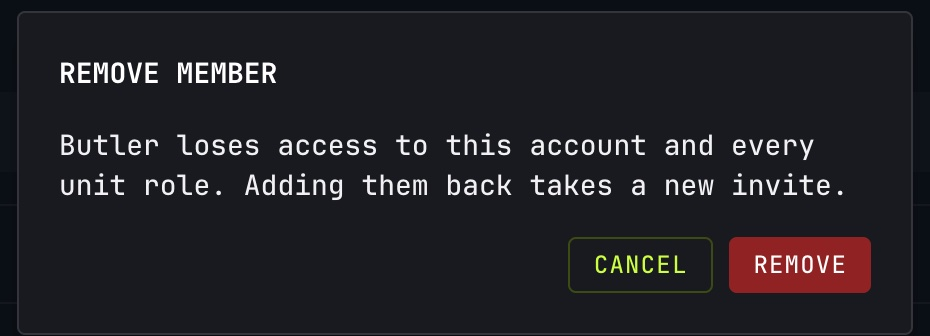
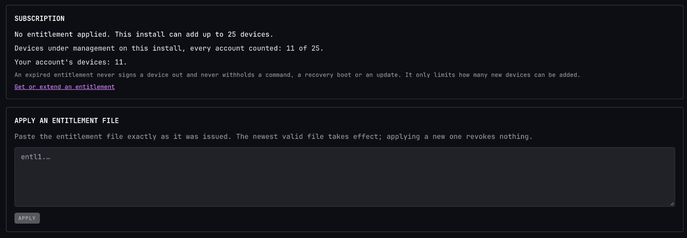

Team, sign-in security and the device limit
Your own sign-in settings, two-step verification and sessions, inviting and managing members and their roles, and how many devices a server admits.
This page covers who can sign in to your account and what each person may do: your own password, second factor and sessions, the team and its roles, and the per-server device limit.
Where things are
Click your initials at the top right to open the account menu.

- Account Settings opens the Account page: your own sign-in methods on the Account tab, and Advanced. A Super Admin also sees Master Tokens, Audit and Subscription; Audit is never shown to a lower role.
- Team Management holds the organization name, the members, invitations and role permissions.
- Sign out ends the session in this browser.
The web UI has no field to change your name or email address. The name can be set through the API (PUT /api/v1/users/me); an installer-created owner is called "User" until then.
Your sign-in settings

Changing your password
At the bottom of the tab, click Password to unfold the form, fill in New password and Confirm password (at least 8 characters) and click Save password. The page answers "Password saved. Other sessions were signed out."
Two-step verification (authenticator app)
The Two-step verification section says whether it is on. To enable it:
- Click Turn on. You are asked to confirm your identity first (see below).
- Scan the QR code with your authenticator app, or use Cannot scan? Enter this key by hand:.
- Type the six-digit code into Code from your app and click Confirm.
- Save your recovery codes lists ten single-use codes. They are shown once. Store them somewhere other than the phone that runs the app, then click I have saved them.
From then on, sign-in asks for a code after the password, or one of the recovery codes. To switch the factor off, click Turn off and enter a current code.
Passkeys
A passkey (fingerprint, face or security key) signs you in instead of a password. Type a label into Name this passkey and click Add a passkey; the browser does the rest. Each passkey is listed as Synced across your devices or Stored on one device, with a Remove button.
Confirming your identity
Actions that add or change a way to sign in, or change who has access, ask "Confirm it's you" before they run: turning on two-step verification, adding a passkey, changing your password or profile, inviting or re-inviting a member, changing a member's role or status, removing a member, changing role permissions and applying an entitlement file.

Confirm with your Current password, or, if you have them, Confirm with a code, Use a passkey or your identity provider. The confirmation lasts five minutes in that browser tab only. It exists so that a stolen session or an unlocked laptop cannot add a new way into your account. Cancel performs nothing.
Sessions

Sessions lists every place you are signed in: the browser's identification string (or "Unknown device"), the address it last connected from, and when it was last used. Your current browser is marked this device. Sign out ends that session immediately, with no further question, and Sign out of my other sessions ends all but the current one.

One user holds at most 10 sessions by default (AUTH_MAX_SESSIONS_PER_USER). A sign-in beyond the cap is not refused: the least recently used session is signed out instead. A session that is not used for 7 days expires.
The team

- Organization: edit Organization name (2 to 100 characters) and click Rename.
- Require two-step verification: when checked (saved immediately), every member who signs in with a password must set up an authenticator app or a passkey before they can use this account. Members who sign in only through single sign-on are not asked.
Roles
Every member has one account-wide role, chosen in the selector on their row. Roles build on each other:
| Role | May do |
|---|---|
| Viewer | See nodes, images, SSH public keys, organizational units, playbooks and utilities; mark favorites. No secrets, no commands. |
| Manager | Everything a Viewer may, plus reboot nodes, run status checks, set hostnames, and create, edit and run playbooks made of non-privileged steps. |
| Admin | Everything a Manager may, plus add, approve, edit, move and delete nodes, install an OS, shut down, reboot to recovery, update agents and bootloaders, write files, open the web terminal, adopt over SSH, read node credentials, read and manage secrets and device login users, manage utilities, and author and run privileged playbooks. |
| Super Admin | Everything, including members, invitations and role permissions, master tokens, OS images, SSH keys, account policies and organizational units, the audit trail, data export and the subscription. |
Viewer, Manager and Admin can also be granted on a single unit instead of the whole account, from that unit on the Organization page (Grant on this unit); the member's row then names it, for example "Admin in Garage". Super Admin is always account-wide.
The Role permissions tab tunes five optional permissions per role: Reboot nodes, Open web terminal (root shell), Onboard nodes (create provisioning tokens), Manage organizational units and Create and edit playbooks. Each line says Default or Custom; Reset to defaults reverts a role. Member management itself can never be delegated.

Inviting a member

- Under Invite a member, type the address into Email, pick the role, and click Create invite. You confirm your identity.
- With a mail relay configured, the person receives the link and the page says "Invitation emailed to …". It still shows the link, in case the mail lands in spam.
- Without a mail relay, nothing is sent. The page shows "Share this one-time invite link — it is shown only once:". Copy it and hand it over through a channel you trust; the link is the invitation.
The person opens the link, chooses a password (or signs in, if they already have a user on this server) and joins with the role you picked. An invitation expires after seven days.
Pending invites lists invitations not yet accepted, for example intern@uptime.example as Viewer. Resend makes a new link and the old one stops working; Revoke withdraws the invitation.
Changing, suspending and removing members
- Change a role: pick another role in the member's selector. After you confirm your identity it applies at once; there is no separate save.
- Disable suspends the member: they keep their place and role but cannot use the account until you click Enable.
- Remove asks first:

Removing or disabling someone takes effect immediately: their open connections are closed and their next request to this account is refused. Removal deletes the membership and every unit role in this account; the person's user remains on the server. The last Super Admin can be neither removed, disabled nor demoted.
Sign-up, recovery and single sign-on
Sign-up is closed once the first account exists: a second sign-up is refused with "registration is currently closed; ask the operator of this server to invite you to an account". Colleagues join by invitation.
Without a mail relay there is no "forgot password" link. The operator resets a forgotten password or a lost authenticator app from the server's command line, which also signs the user out everywhere; see Recover a lost password or authenticator.
The server can also sign people in through an OpenID Connect identity provider such as Google. It is off by default and the operator configures it (Email and single sign-on). When it is on, the Account tab gains a Sign-in methods section to link your provider identity; people still need an invitation.
The device limit
A server admits 25 devices free, counted across every account it hosts. A signed entitlement file raises the limit.

- What counts: a node that is approved and connected at least once. A node created but never connected, one pending approval, a rejected one and a deleted one do not count. The count lives on Account Settings → Subscription.
- At the limit: adding a node is refused with a notice such as "This install already manages 25 devices and its entitlement covers 25." The new device is not admitted; it waits, retries on its own about every 15 minutes, and is admitted once a slot is free. Status lists each waiting node under Device limit reached with the detail "25 of 25 devices". Devices already admitted keep connecting, taking commands, booting recovery and receiving updates.
- Raising it: request a file at orchestrator.sh/subscription (the Get or extend an entitlement link), paste it under Apply an entitlement file and click Apply. Only the server's operator account, the oldest one, sees the paste box. The newest valid file wins; applying one revokes nothing. Alternatively the operator writes it into
secrets/entitlementand recreates the backend.
The full rules are in ENTITLEMENT.md.